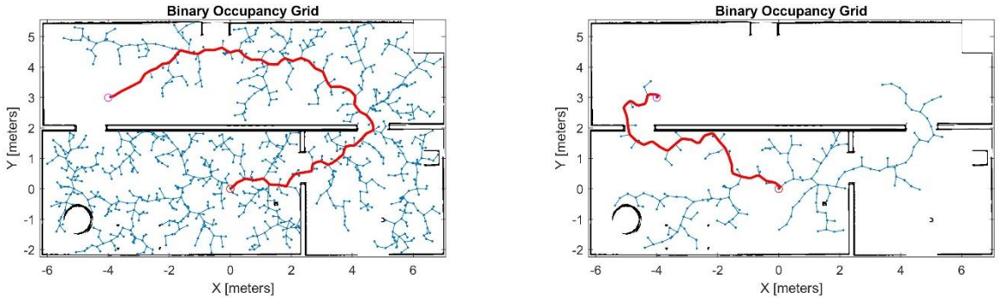
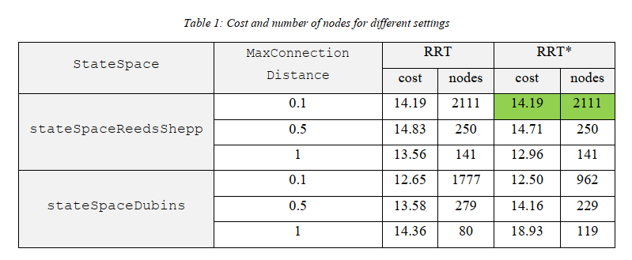
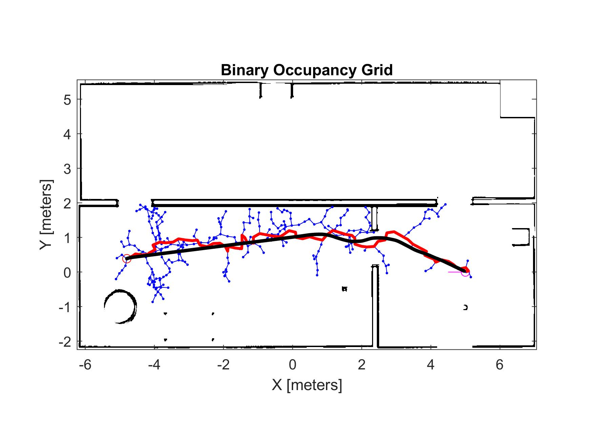
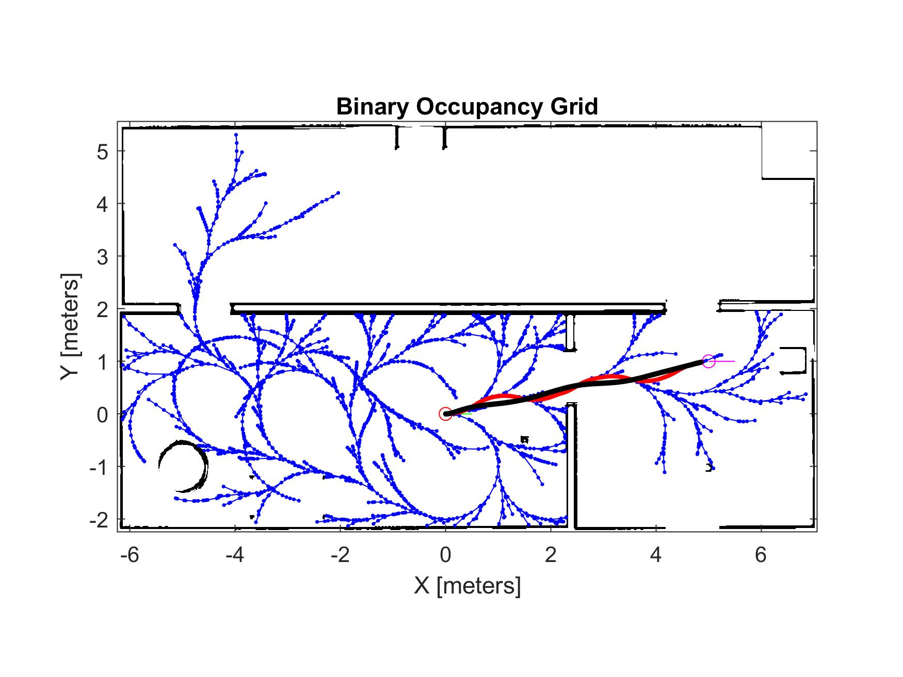

Development, validation, and instruction of a mobile-robot planning laboratory comparing sampling-based planners, robot-constrained state spaces, collision-safe path design, and trajectory execution with Pure Pursuit.
Lab 3 moved beyond localization and focused on generating, evaluating, and executing collision-free paths for a TurtleBot in the Gazebo Office environment.
Students first compared RRT and RRT* under controlled start and goal conditions, then designed their own path, and finally tested whether the planned waypoints could be followed by the simulated TurtleBot.
The exercises therefore connected planner behavior, state-space constraints, map representation, collision margins, and controller tracking rather than treating planning as an isolated algorithm.
Both planners expand a search tree through randomized samples, but RRT* adds parent selection and rewiring to improve path cost as planning continues.
Efficiently explores the free configuration space and searches for a feasible connection between start and goal states.
Extends RRT using local cost comparison and rewiring, allowing the solution to improve toward a lower-cost path as sampling continues.

The occupancy map was expanded to account for the TurtleBot footprint. Obstacles were inflated before planning so that a nominally collision-free path would retain additional clearance during trajectory execution.
Robot kinematics were also represented through constrained state spaces rather than treating the robot as an unrestricted point moving in two dimensions.
Planner behavior was compared by changing state space, connection distance, and planner type while preserving robot-specific constraints.

Increasing maximum connection distance generally reduced the number of search-tree nodes by allowing larger expansions. RRT* often produced lower-cost solutions, although planner randomness and route selection meant that it was not uniformly superior in every tested case.
The final path was selected with execution safety in mind. A route passing through the center of the doorway was preferred because it provided greater clearance from surrounding obstacles.
This introduced an important engineering distinction: a mathematically shorter path is not necessarily the most robust path for a physical robot to execute.
The planned waypoint path was executed using a Pure Pursuit controller and compared with the trajectory actually traveled by the TurtleBot.

A second planning and tracking result reinforces the influence of randomized tree construction, path geometry, and controller behavior on the final robot motion.

Even after inflating obstacles to account for robot size, collision remains possible if the tracking controller deviates from the planned path.
The lab therefore emphasized that path planning must include adequate safety clearance and should be evaluated together with the behavior of the downstream controller.
The laboratory gave students freedom to change planner configurations and design their own start and goal poses, encouraging experimentation rather than reproduction of a single fixed result.
Student reports were expected to explain planner behavior, discuss RRT limitations, interpret planning results, and identify methods for improving performance and robustness.
I developed and revised the laboratory material, validated the planning and trajectory-tracking workflow, prepared reference results and evaluation material, supported students during implementation and troubleshooting, and participated in grading and technical feedback.
The laboratory was designed to connect sampling-based planning theory with robot constraints, collision safety, planner configuration, and executable mobile-robot motion.
The three main laboratories progressed from ROS and SLAM, through probabilistic localization, to path planning and trajectory execution.